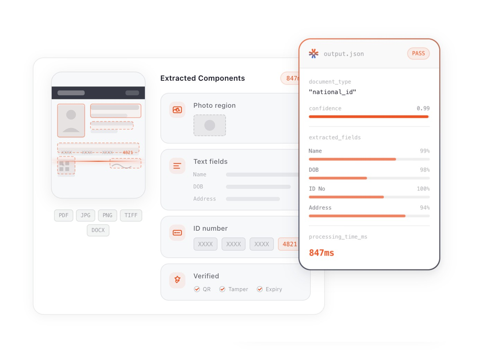
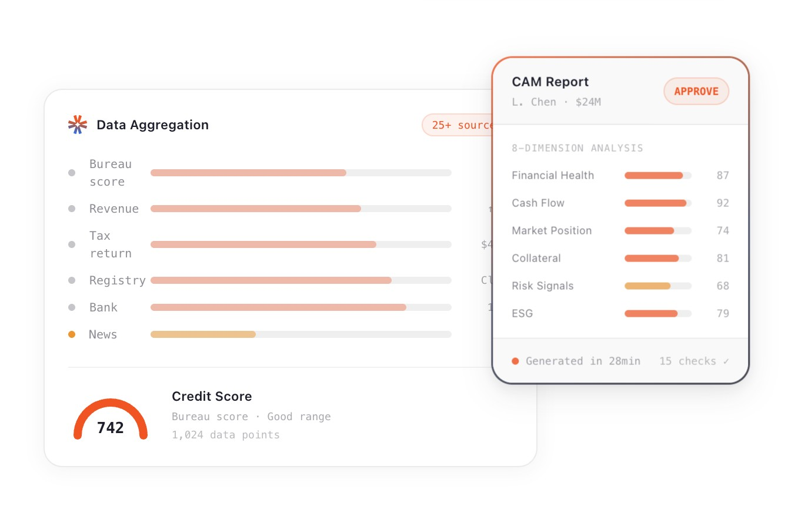
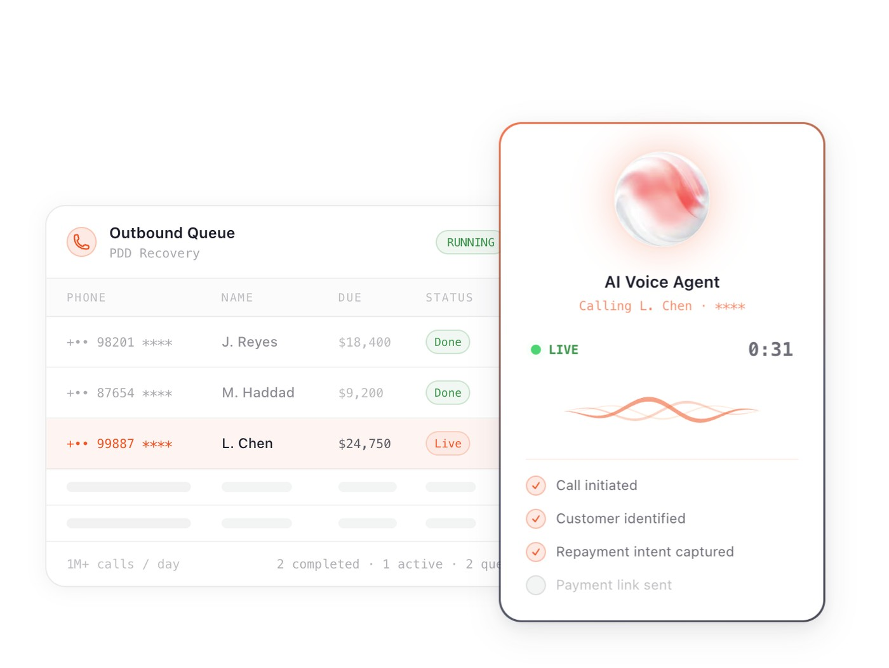
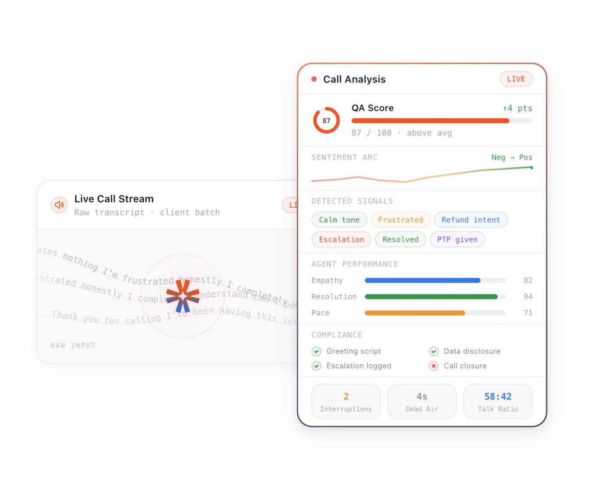
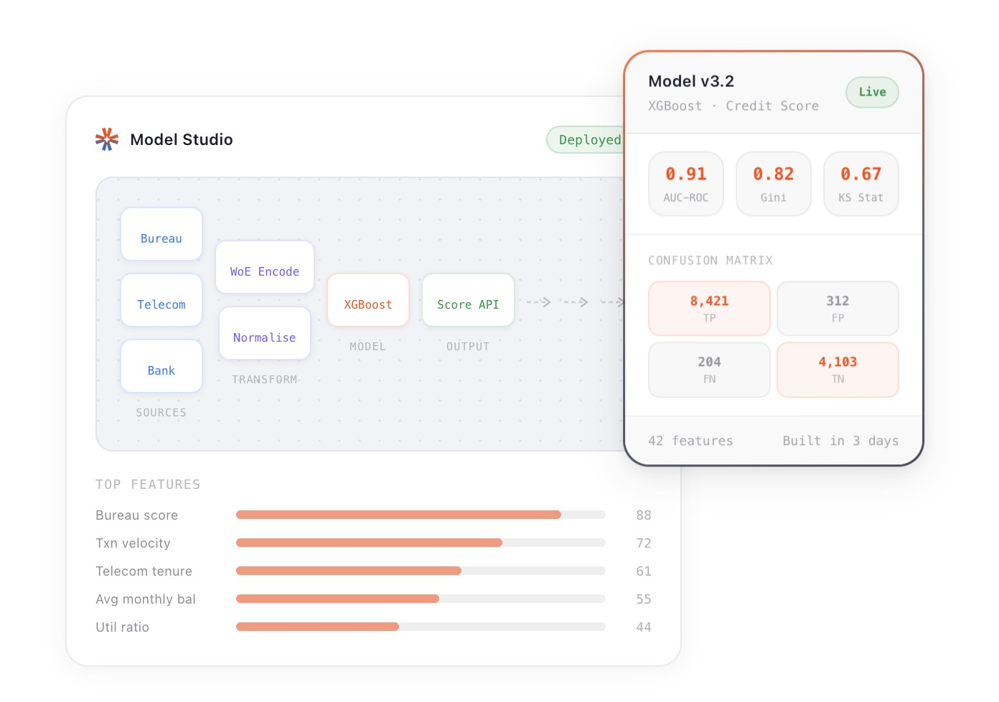
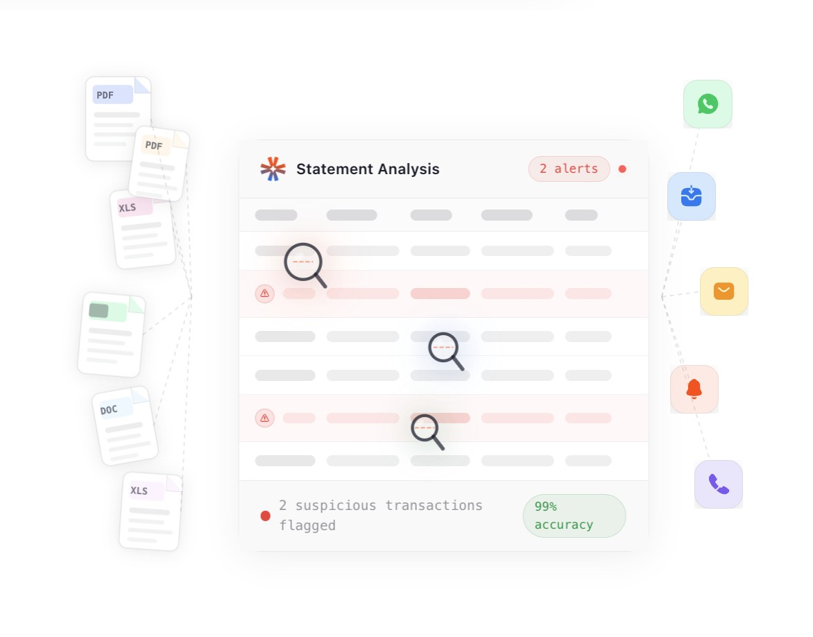
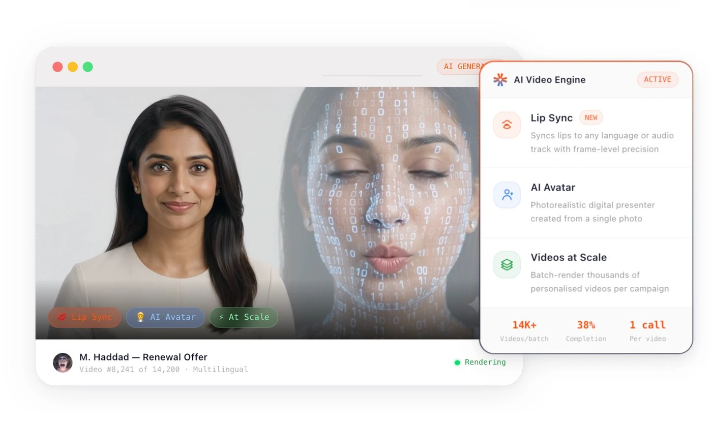

AI a bank will put its name on.
YuVerse is a last-mile AI company for banking, the place where a call is answered, a document is read, and a loan is decided. A model can do all three. A bank still cannot deploy an answer its officers cannot check, its supervisors cannot correct, and its regulators cannot audit. My work across the suite was to design that trust in, so the AI became something a bank would sign its name to. Today it runs 25M+ calls and 20M+ documents a month.
The last mile of a bank is where the accountability lives. A collections call can promise something the bank has to honour. A misread field on a KYC document can onboard the wrong person. A number in a credit memo decides whether a business gets funded. AI can now do all of this at a speed no team can match. But speed is not the thing a bank buys. It buys defensibility. An officer has to be able to question the answer, a supervisor has to be able to correct it, and an auditor has to be able to trace it, or the answer never leaves the lab.
So the design brief across YuVerse was not to make the AI look intelligent. It was to make it accountable. Every product had to show its work, wear its own doubt, and hand control back to a person the moment judgment was needed. The measure of success was not how much the AI did on its own. It was how confidently a regulated institution would put its name on the output.
Four design primitives run through every product in the suite. Confidence, not certainty: every AI output carries a visible measure of its own doubt, so a person knows where to look. Citation, not assertion: every claim links back to the exact source it came from. Exception, not everything: a human sees only the cases that actually need judgment, never the thousands that do not. And the human always keeps the pen: people can override, edit, and correct, and the AI defers to them.
Those four ideas are what make the same platform legible to a KYC reviewer, a credit analyst, a collections agent, and a compliance supervisor at once. The products look different because the work is different. Underneath, they are the same promise, made four ways.
KYC review is the classic trap of enterprise AI. Automate it fully and one bad extraction slips a fraudulent identity through. Keep a human on every document and you have automated nothing. The design answer was to make the interface exception-based. Every extracted field carries a confidence score, and the pipeline, upload and extract, dynamic triangulations, run the checks, summary, only ever surfaces the items that are flagged, tampered, or missing. Thousands of clean documents pass silently. A reviewer opens their queue and sees only the handful that genuinely need a human eye.
The principle underneath is that the system reads the field, not just the text. It knows that D.O.B., Date of Birth, and its regional equivalents are the same thing, builds the validation checklist at runtime for the document type it detects, and cross-checks name, date, and address across documents. The reviewer is never asked to trust a black box. They are shown exactly what passed, what failed, and how sure the system is.

A credit assessment memo is a document a bank stakes real money on, and until now it took an analyst five to twenty days to write by hand, with no audit trail and a real error rate. The system reads the borrower's statements, spreads the financials, calculates DSCR, leverage, and liquidity, and assembles a full draft memo in about thirty minutes. The risk with any tool like this is that people either rubber-stamp it or refuse to trust it. The design had to earn the middle path.
Every figure in the memo traces to the exact source page it came from, and one click opens that page. The analyst can edit any section and the AI revises around the change, with full version history and every keystroke signed. Handoffs, reviews, and approvals happen in one place, so the audit trail writes itself. The analyst is faster because the drudgery is gone, and more confident because nothing in the memo is unsourced. The AI drafts. The human decides, and can prove why.

A voice agent loses trust in the first second it feels like a machine. The design targets were about control and latency. A caller can interrupt at any point, barge-in that cuts the agent off mid-sentence the way a real conversation works, and the round trip stays under 200 milliseconds so it never has the tell-tale pause of a bot. It speaks English and ten Indic languages, and switches between them mid-sentence the way people in India actually talk.
The trust move that matters most is the handoff. When a conversation needs a specialist or a human, the agent escalates inside the same call with full context carried over and zero re-authentication, so the customer never repeats themselves and never starts again. Audio is processed in the stream and discarded, sessions are isolated, which is what lets a bank run it on regulated conversations at all. At the scale of tens of millions of calls a month, those are not features. They are the conditions of deployment.

Compliance in a call centre used to mean sampling a few percent of calls after the fact and hoping the rest were fine. The system scores every call on more than thirty parameters, greeting, discovery, empathy, negotiation, compliance, resolution, and flags mis-selling, false promises, and abusive language at the level of the individual sentence, not the whole call. A supervisor gets an alert in under two seconds, while there is still time to act, and dispositions write themselves into the CRM the moment a call ends.
Designing this meant turning a wall of transcripts into something a supervisor can actually act on: a live view where emotion transitions are visible, a composite quality score they can defend, and a flag that points to the exact moment a rule was broken. Accountability stops being a monthly report and becomes a real-time surface. That is what lets a bank run outbound AI at scale without taking on unbounded risk.




The through-line from design to business is short. Confidence scores and exception queues let banks automate KYC and collections without giving up oversight. Citations and audit trails let compliance and credit teams put AI-drafted work into regulated processes. Real-time control let voice AI run on millions of live customer calls. Trust was the unlock, and once it was designed in, adoption and outcomes followed.
Figures shown are YuVerse's published product and platform results.
The teams shipping AI fastest are the ones whose design makes the AI accountable, because accountability is what lets a regulated business actually turn it on. Show the confidence, cite the source, surface only the exception, and always leave a human holding the pen. Do that, and a model in a lab becomes a system a bank will sign its name to. That is a design problem, and it is the one worth being great at.